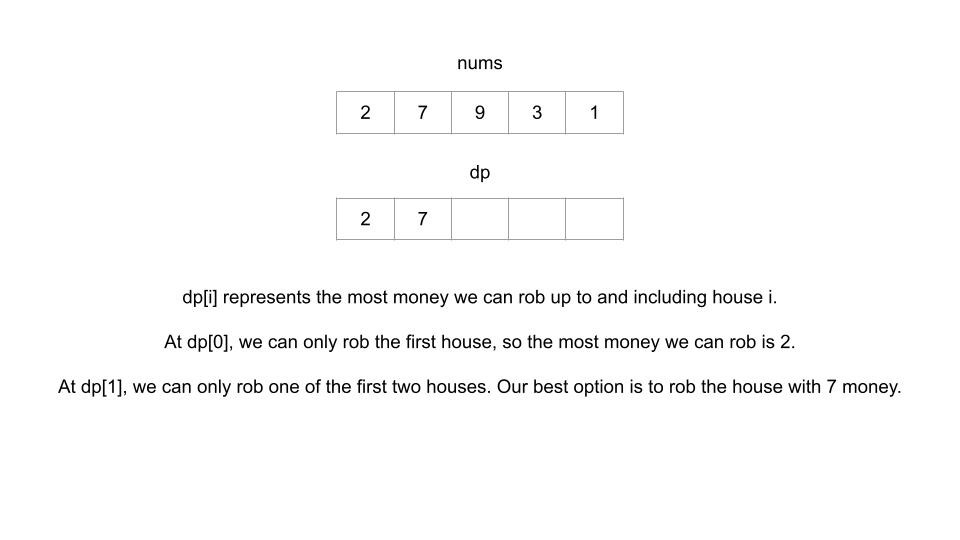
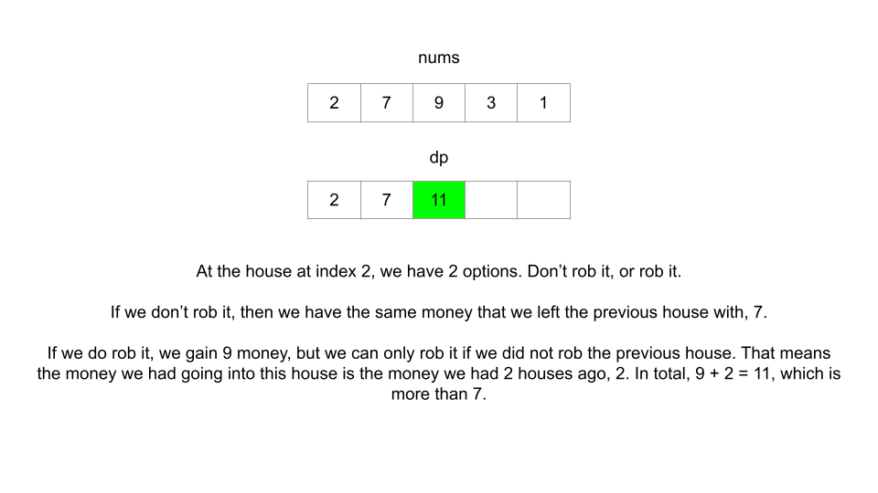
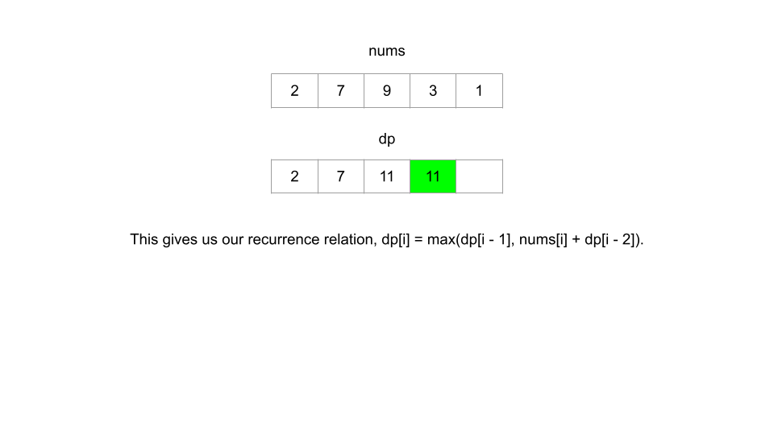
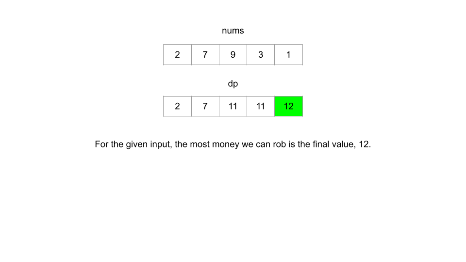

Это первая из 6 статей, в которых мы будем использовать структуру для решения примеров задач DP. Фреймворк предоставляет схему решения проблем DP, но когда вы только начинаете изучать DP, самостоятельно вывести некоторую логику может быть сложно. Цель этих статей — рассказать, как использовать эту структуру для решения каждой проблемы, и наша цель состоит в том, чтобы к концу этой статьи вы смогли самостоятельно решать большинство проблем DP, используя эту структуру.
В этой статье мы рассмотрим проблему грабителя. В предыдущем разделе этой карты мы говорили о том, как «Грабитель дома» соответствует характеристикам проблемы DP. Он требует максимума, и наши текущие решения повлияют на то, какие варианты доступны для наших будущих решений. Давайте посмотрим, как мы можем использовать эту структуру для разработки алгоритма решения этой проблемы.
1. Функция или массив, отвечающие на задачу для данного состояния.
Во-первых, нам нужно определиться с переменными состояния. Напоминаем, что переменные состояния должны полностью описывать сценарий. Представьте, если бы у вас был такой сценарий в реальной жизни — вы грабитель и у вас есть ряд домов. Если вы находитесь в одном из домов, единственная переменная, которая вам понадобится для описания вашей ситуации, — это целое число — индекс дома, в котором вы сейчас находитесь. Следовательно, единственной переменной состояния является целое число, скажем i, что указывает на индекс дома.
Если в задаче было дополнительное ограничение, например «разрешено грабить только до k домов», то
k будет еще одной необходимой переменной состояния. Это потому, что находиться, скажем, в доме 4, где
осталось 3 ограбления, отличается от пребывания в доме 4, когда осталось 5 ограблений.
Вы можете задаться вопросом: почему бы нам не включить переменную состояния, которая является логическим
значением и указывает, ограбили мы предыдущий дом или нет? Мы, конечно, могли бы включить эту переменную
состояния, но мы можем разработать наше рекуррентное отношение таким образом, чтобы сделать ее ненужной.
Поначалу сложно развить для этого интуицию, но с практикой становится легче.
Проблема в том, чтобы попросить «максимальную сумму денег, которую вы можете украсть». Поэтому мы будем использовать либо функцию dp(i), который возвращает максимальную сумму денег, которую вы можете ограбить, включая дом. я или массив дп где dp[i] представляет собой максимальную сумму денег, которую вы можете ограбить, включая дом i.
Это означает, что после решения всех подзадач dp[i] и dp(i) оба возвращают ответ на исходную задачу для подмассива числа, охватывающие от 0 до I включительно. Чтобы решить исходную задачу, нам просто нужно будет вернуть dp[nums.length - 1] или dp(nums.length - 1), в зависимости от того, работаем ли мы снизу вверх или сверху вниз.
2. Рекуррентное соотношение перехода между состояниями.
Предположим, что мы используем нисходящий подход (рекурсивная функция). Обратите внимание, что подход «сверху вниз» ближе к нашему естественному образу мышления, и обычно легче думать о рекуррентном отношении, если мы начнем с подхода «сверху вниз».
Далее нам нужно найти рекуррентное соотношение, что обычно является самой сложной частью проблемы. Для любого рекуррентного отношения лучше всего начать с рассмотрения общего состояния (в данном случае, скажем, мы находимся в доме по индексу i) и используйте информацию из описания проблемы, чтобы подумать о том, как другие состояния относятся к текущему.
Если мы находимся в каком-то доме, то логически у нас есть 2 варианта: мы можем грабить этот дом или не грабить этот дом.
Из этих двух вариантов мы всегда хотим выбрать тот, который принесет нам максимальную прибыль. Объединив все это, мы имеем наше рекуррентное отношение: dp(i)=max(dp(i - 1), dp(i - 2) + nums[i]) .
3. Base cases
Последнее, что нам нужно, — это базовые случаи, чтобы наше рекуррентное отношение знало, когда остановиться. Базовые случаи часто можно найти по подсказкам в описании проблемы или с помощью логического мышления. В этой задаче, если есть только один дом, то большую часть денег мы можем заработать, ограбив дом (альтернатива — не грабить дом). Если домов всего два, то большую часть денег мы можем заработать, ограбив дом с большим количеством денег (поскольку нам приходится выбирать между ними). Таким образом, наши базовые случаи:
Теперь, когда мы создали все три части структуры, давайте соединим их для получения окончательного результата. Помните: нам нужно запомнить функцию!
def dp(i):
# Base cases
if i == 0:
return nums[0]
if i == 1:
return max(nums[0], nums[1])
if i not in memo:
memo[i] = max(dp(i - 1), dp(i - 2) + nums[i]) # Recurrence relation
return memo[i]
memo = {}
return dp(len(nums) - 1)
Вот восходящий подход: все то же самое, за исключением того, что мы используем массив вместо хеш-карты и выполняем итерацию с использованием цикла for вместо использования рекурсии.
if len(nums) == 1:
return nums[0]
dp = [0] * len(nums)
# Base cases
dp[0] = nums[0]
dp[1] = max(nums[0], nums[1])
for i in range(2, len(nums)):
dp[i] = max(dp[i - 1], dp[i - 2] + nums[i]) # Recurrence relation
return dp[-1]
Для обеих реализаций временная и пространственная сложность равна O(N). Мы подробно поговорим о временной и пространственной сложности алгоритмов DP в конце этой главы. Вот анимация, показывающая алгоритм в действии:




Теперь, когда вы увидели структуру в действии, попробуйте решить эти проблемы (расположенные на следующих двух страницах) самостоятельно. Если вы застряли, вернитесь сюда за подсказками:
746. Min Cost Climbing Stairs
1137. N-th Tribonacci Number
740. Delete and Earn
When we are at index i we have 2 options:
Choose whichever option yields the most points.
Bonus Hint: When is the first option guaranteed to be better than the second option?